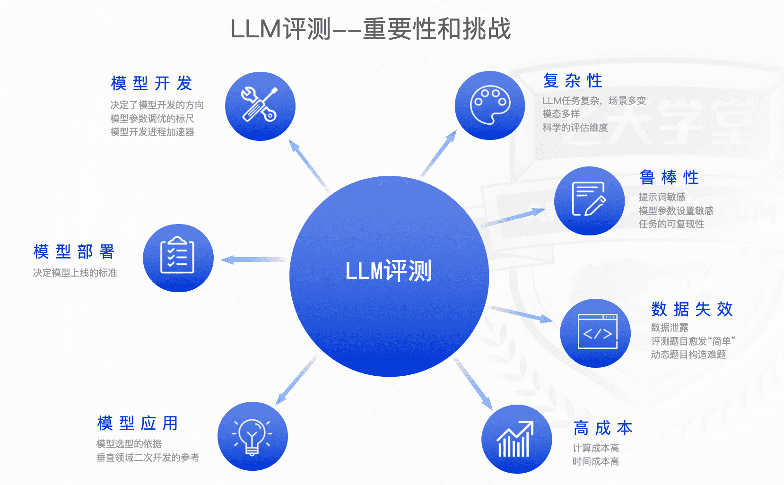
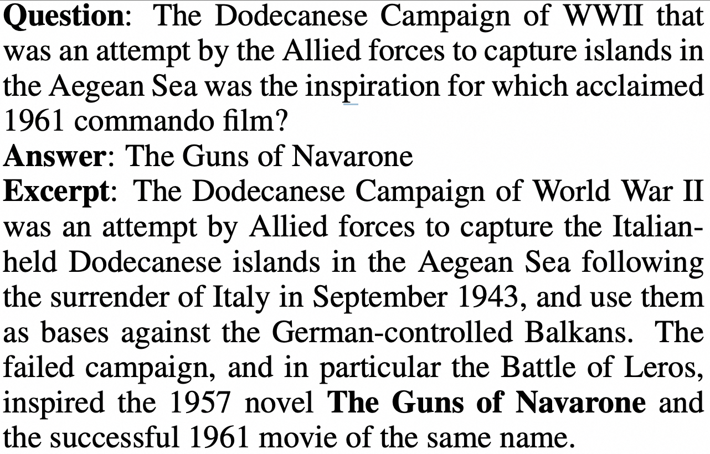
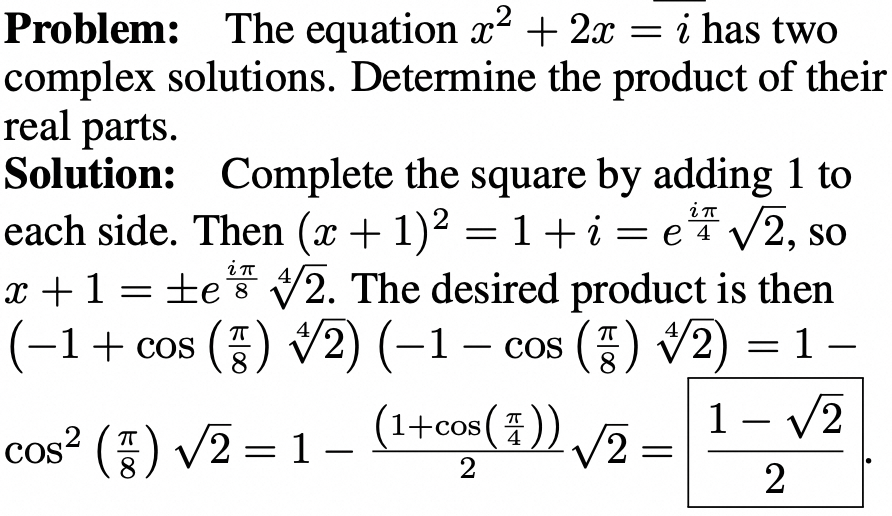
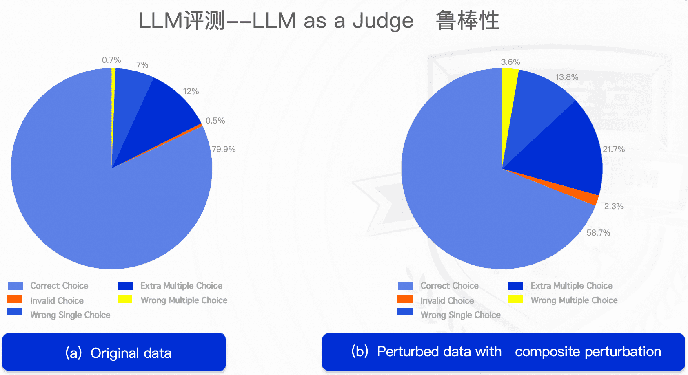
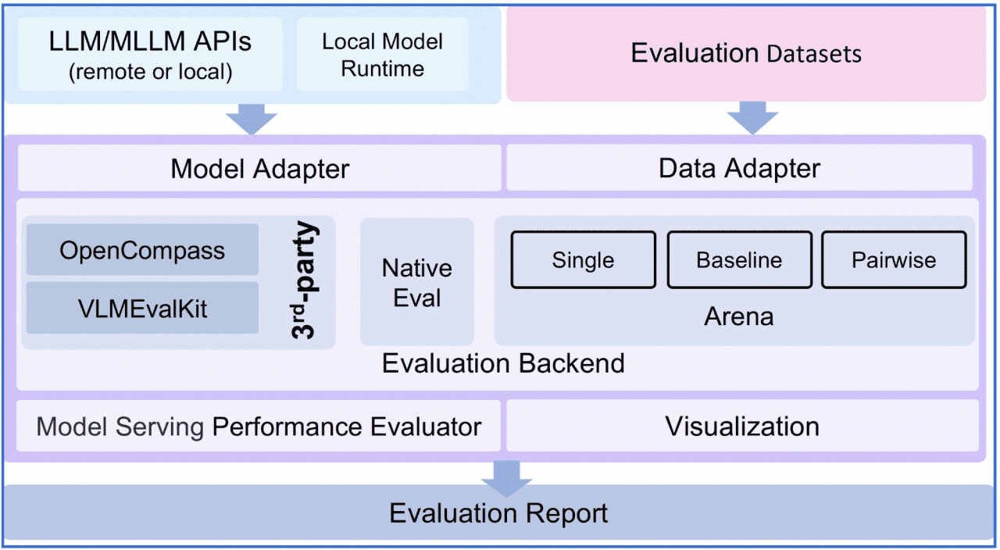

大模型自动评估理论和实战--LLM Automatic Evaluation
引言
背景
大语言模型（LLM）评测是LLM开发和应用中的关键环节，是评估LLM性能、鲁棒性、偏见、幻觉等方面的重要手段。LLM评测的目标是通过一系列的评测任务和指标，全面、客观地评估LLM的性能，为LLM的研发、应用和部署提供参考。 
{kind=link}
目前评测方法可以分为人工评测和自动评测，其中，自动评测技术相比人工评测来讲，具有效率高、一致性好、可复现、鲁棒性好等特点，逐渐成为业界研究的重点。
模型的自动评测技术可以分为rule-based和model-based两大类：
-
rule-based方法：
-
benchmark以客观题为主，例如多选题，被测的LLM通过理解context/question，来指定最佳答案
-
解析LLM的response，与标准答案做对比
-
计算metric（accuracy、rouge、bleu等）
-
-
model-based方法：
-
裁判员模型（e.g. GPT-4、Claude、Expert Models/Reward models）
-
LLM Peer-examination
-
内容提要
-
LLM自动评估理论
-
如何评估一个LLM
-
自动评估的方法
-
常用的benchmark
-
LLM评估面临的问题和挑战
-
LLM自动评估实战
-
LLMuses自动评测框架介绍
-
基于客观题benchmark自动评估
-
基于专家模型的自动评估
-
LLM推理性能评估
LLM评估的方法论
{kind=link}
如何评估一个LLM
-
哪些维度？
-
语义理解（Understanding）
-
知识推理（Reasoning）
-
专业能力（e.g. coding、math）
-
应用能力（MedicalApps、AgentApps、AI-FOR-SCI ...）
-
指令跟随（Instruction Following）
-
鲁棒性（Robustness）
-
偏见（Bias）
-
幻觉（Hallucinations）
-
安全性（Safety）
-
{kind=link}
例：GPT-4 vs LLaMA2-7B能力维度对比评测
自动评估方法
2.1 模型效果评估
- 基准和指标（Benchmarks & Metrics）
| 数据集 | 描述 | 评价指标 | 样例 |
|---|---|---|---|
| MMLU | MassiveMultitaskLanguageUnderstanding 一个多任务数据集，由各种学科的多项选择题组成。涵盖STEM、人文、社科等领域。包括57个子任务，包括初等数学、美国历史、计算机科学、法律等等。 | Accuracy | Question: In 2016, about how many people in the United States were homeless? A. 55,000 B. 550,000 C. 5,500,000 D. 55,000,000 Answer: B |
| TriviaQA | 阅读理解数据集，包含超过65万个问题-答案-证据三元组。其包括95K个问答对，由冷知识爱好者提供 + 独立收集的事实性文档撰写 | EM(ExactMatch) F1 (word-level) |  （问题-答案-证据文档） |
| MATH | 12500道数学题，每道包含step-by-step solution | Accuracy |  |
| HumanEval | HumanEval (Hand-Written Evaluation Set) 一个手写的问题解决数据集，要求根据给定的问题和代码模板，生成正确的代码片段。包含164个高质量的问题，涵盖五种编程语言：Python, C++, Java, Go, 和 JavaScript。 | pass@k | { "task_id": "test/0", "prompt": "def return1():\n", "canonical_solution": " return 1", "test": "def check(candidate):\n assert candidate() == 1", "entry_point": "return1" } |
{kind=link}
{kind=link}
- Rule-based自动评测
基本流程
{kind=link}
- 根据数据集原始question来构建prompt
示例(few-shot)
{kind=link}
示例：few-shot with CoT
# Examples in BBH
Evaluate the result of a random Boolean expression.
Q: not ( ( not not True ) ) is
A: Let's think step by step.
Remember that (i) expressions inside brackets are always evaluated first and that (ii) the order of operations from highest priority to lowest priority is "not", "and", "or", respectively.
We first simplify this expression "Z" as follows: "Z = not ( ( not not True ) ) = not ( ( A ) )" where "A = not not True".
Let's evaluate A: A = not not True = not (not True) = not False = True.
Plugging in A, we get: Z = not ( ( A ) ) = not ( ( True ) ) = not True = False. So the answer is False.
Q: True and False and not True and True is
A: Let's think step by step.
Remember that (i) expressions inside brackets are always evaluated first and that (ii) the order of operations from highest priority to lowest priority is "not", "and", "or", respectively.
We first simplify this expression "Z" as follows: "Z = True and False and not True and True = A and B" where "A = True and False" and "B = not True and True".
Let's evaluate A: A = True and False = False.
Let's evaluate B: B = not True and True = not (True and True) = not (True) = False.
Plugging in A and B, we get: Z = A and B = False and False = False. So the answer is False.
- 模型预测
Generate
# Demo -- model_genereate 直接生成response
def model_generate(query: str, infer_cfg: dict) -> str:
inputs = tokenizer.encode(query)
input_ids = inputs['input_ids']
...
# Process infer cfg (do_sample, top_k, top_p, temperature, special_tokens ...)
generation_config = process_cfg(args)
...
# Run inference
output_ids = model.generate(
input_ids=input_ids,
attention_mask=attention_mask,
generation_config=generation_config,
)
response = tokenizer.decode(output_ids, **decode_kwargs)
return response
Likelihood
# Demo -- model_call方式计算loglikelihood
# context + continuation 拼接，示例：
# Question： 法国的首都是哪里？
# Choices： A.北京 B.巴黎 C.汉堡 D.纽约
# pair-1: (ctx, cont) = (法国的首都是哪里？，A.北京)
# pair-2: (ctx, cont) = (法国的首都是哪里？，B.巴黎)
# pair-3: (ctx, cont) = (法国的首都是哪里？，C.汉堡)
# pair-4: (ctx, cont) = (法国的首都是哪里？，D.纽约)
# Logits -->
def loglikelihood(self, inputs: list, infer_cfg: dict = None) -> list:
# To predict one doc
doc_ele_pred = []
for ctx, continuation in inputs:
# ctx_enc shape: [context_tok_len] cont_enc shape: [continuation_tok_len]
ctx_enc, cont_enc = self._encode_pair(ctx, continuation)
inputs_tokens = torch.tensor(
(ctx_enc.tolist() + cont_enc.tolist())[-(self.max_length + 1):][:-1],
dtype=torch.long,
device=self.model.device).unsqueeze(0)
logits = self.model(inputs_tokens)[0]
logits = torch.nn.functional.log_softmax(logits.float(), dim=-1)
logits = logits[:, -len(cont_enc):, :]
cont_enc = cont_enc.unsqueeze(0).unsqueeze(-1)
logits = torch.gather(logits.cpu(), 2, cont_enc.cpu()).squeeze(-1)
choice_score = float(logits.sum())
doc_ele_pred.append(choice_score)
# e.g. [-2.3, 1.1, -12.9, -9.2], length=len(choices)
return doc_ele_pred
-
评价指标（Metrics）
-
WeightedAverageAccuracy 加权平均准确率
-
Perplexity 困惑度
-
Rouge (Recall-Oriented Understudy for Gisting Evaluation)
-
Bleu (Bilingual evaluation understudy)
-
ELO Rating System
-
PASS@K
-
Model-based自动评测
{kind=link}
-
中心化评测
- 中心化评测模式下，裁判员模型只有一个，可靠性高，但容易收到裁判员模型的bias影响
-
去中心化评测
-
去中心化评测方式，要求模型之间做peer-examination
-
特点是公平性好，但计算量大，且鲁棒性不高
-
裁判员模型
-
GPT-4、Claude、Qwen-Max等 （产品APIs）
-
PandLM、Auto-J (tuned from LLM, like LLaMA)
-
Reward models (Ranking learning)
-
Chatbot Arena -竞技场模式
- （Battle count of each combination of models, from LMSYS）
{kind=link}
- （Fraction of Model A wins for all non-tied A vs. B battles, from LMSYS）
{kind=link}
{kind=link}
{kind=link}
{kind=link}
{kind=link}
2.2 模型性能评估
model serving performance evaluation
| 指标名称 | 说明 |
|---|---|
| Time | 测试总时间（时间单位均为秒） |
| Expected number of requests | 期望发送的请求数，和prompt文件以及期望number有关 |
| concurrency | 并发数 |
| completed | 完成的请求数 |
| succeed | 成功请求数 |
| failed | 失败请求数 |
| qps | 平均qps |
| latency | 平均latency |
| time to first token | 平均首包延迟 |
| throughput | output tokens / seconds 平均每秒输出token数 |
| time per output token | 平均生成一个token需要的时间 总output_tokens/总时间 |
| package per request | 平均每个请求的包数 |
| time per package | 平均每包时间 |
| input tokens per request | 平均每个请求的输入token数 |
| output tokens per request | 平均每个请求输出token数 |
{kind=link}
2.3 问题和挑战
-
基准失效&数据泄露
-
静态数据集与快速演进的LLM能力形成GAP，导致基准失效
-
公开的benchmark被泄露到LLM的开发PT、CPT、SFT等开发环节
解决思路： 动态数据集
{kind=link}
{kind=link}
-
裁判员模型的能力上限
-
裁判员模型的存在明显的能力边界，很难胜任更多场景、更强模型的评测工作
-
泛化性问题
-
LLM幻觉的诊断问题
 在添加扰动的情况下，即便是性能强劲的裁判员模型，也会出现性能下降的情况。
{kind=link}
LLM评估实战
Eval-Scope框架--轻量化、端到端的大模型自动评估框架 
{kind=link}
GitHub: https://github.com/modelscope/eval-scope
框架特性
-
预置常用的测试基准，包括：MMLU、C-Eval、GSM8K、ARC、HellaSwag、TruthfulQA、MATH、HumanEval、BBH、GeneralQA等
-
常用评估指标（metrics）的实现
-
统一model接入，兼容多个系列模型的generate、chat接口
-
客观题自动评估
-
使用专家模型实现复杂任务的自动评估
-
竞技场模式(Arena）
-
评估报告生成与可视化
-
LLM性能评测（Performance Evaluation）
环境安装
# 1. 代码下载
git clone git@github.com:modelscope/eval-scope.git
# 2. 安装依赖
cd eval-scope/
pip install -r requirements/requirements.txt
pip install -e .
-
简单评测
指定模型和数据集 python llmuses/run.py --model ZhipuAI/chatglm3-6b --template-type chatglm3 --datasets ceval --outputs ./outputs/test --limit 10
-
--model: ModelScope模型id， (https://modelscope.cn/models/ZhipuAI/chatglm3-6b/summary) ，也可以是模型的本地路径
-
--datasets: 数据集的id
-
--limit: （每个sub-task）最大评测样本数
-
--template-type: 模型的template-type，如chatglm3、qwen等
-
带参数评测
python llmuses/run.py --model ZhipuAI/chatglm3-6b --template-type chatglm3 --outputs ./outputs/test2 --model-args revision=v1.0.2,precision=torch.float16,device_map=auto --datasets arc --limit 10
-
--model-args: 模型参数，以逗号分隔，key=value形式
-
--datasets: 数据集名称，参考下文`数据集列表`章节
-
--mem-cache: 是否使用内存缓存，若开启，则已经跑过的数据会自动缓存，并持久化到本地磁盘
-
--limit: 每个subset最大评估数据量
-
--template-type: 模型的template-type，如chatglm3、qwen等
- 竞技场模式--Single mode
Single mode，使用专家模型（GPT-4）对待测LLM进行打分
# Example
# Note: dry-run模式 (模型answer正常生成，但专家模型，如GPT-4，不会被触发，评估结果会随机生成，如需正式评测，请去掉--dry-run参数)
python llmuses/run_arena.py --c registry/config/cfg_single.yaml --dry-run
- 竞技场模式--Baseline mode
Baseline mode，选定baseline模型，其它待测LLM与该模型进行对比
# Example
# Note: dry-run模式 (模型answer正常生成，但专家模型，如GPT-4，不会被触发，评估结果会随机生成，如需正式评测，请去掉--dry-run参数)
python llmuses/run_arena.py --c registry/config/cfg_pairwise_baseline.yaml --dry-run
- 竞技场模式--Pairwise mode
Pairwise mode，待测LLM两两组合进行对弈
# Example
# Note: dry-run模式 (模型answer正常生成，但专家模型，如GPT-4，不会被触发，评估结果会随机生成，如需正式评测，请去掉--dry-run参数)
python llmuses/run_arena.py -c registry/config/cfg_arena.yaml --dry-run
{kind=link}
- 效果评测报告
按照预定格式存放数据，使用streamlit启动可视化服务
# Usage:
streamlit run viz.py -- --review-file llmuses/registry/data/qa_browser/battle.jsonl --category-file llmuses/registry/data/qa_browser/category_mapping.yaml
-
报告可视化
-
Leaderboard: https://modelscope.cn/leaderboard/58/ranking?type=free
{kind=link}
{kind=link}
- 模型性能评测（Perf Eval）
性能评测报告示例
{kind=link}
{kind=link}